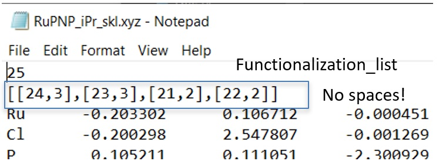
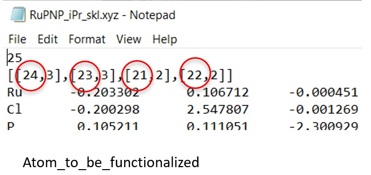
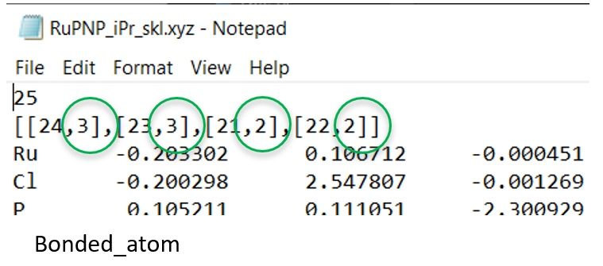
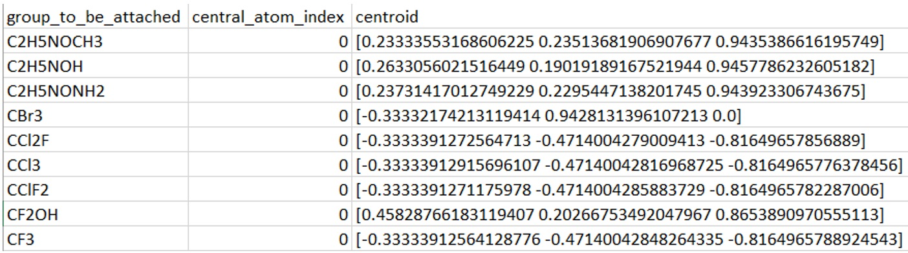

ChemSpaX can be used for local chemical space exploration of any structure. This is done by placing substuents on a skeleton. A substituent can be chosen from an existing library and can be attached to the skeleton.
Installation
Python 3.6.0 or higher is recommended.
It is recommended to use a virtual environment. Anaconda can be used to manage virtual environments (using Anaconda allows the user to skip
compilation of openbabel from source):
Download the latest installer from
Anaconda’s website
(Or load the Anaconda/Miniconda module if working on a supercomputer).
For example:
wget https://repo.anaconda.com/archive/Anaconda3-2020.07-Linux-x86_64.sh
Then run the installation script with:
bash Anaconda3-2020.07-Linux-x86_64.sh
The installation is pretty self explanatory, afterwards the following commands can be used to
create a virtual environment and activate it.
The environment will be named ‘chemspax’, the conda_env.yml file can be changed if a different name is required.
conda env create -f conda_env.yml
conda activate chemspax
Check if the environment is installed correctly by running
conda env list
More information on virtual environments can be found at the venv homepage or this Anaconda cheatsheet
Now the repository can be cloned with:
git clone https://github.com/EPiCs-group/chemspax
This will create a folder called chemspax in the current directory. ChemSpaX can be installed by running the following command in the ChemSpaX folder:
pip install -e .
This will install the dependencies and the package itself in the chemspax conda environment.
Usage
The main funcion and Python file are used to place functional groups. The user needs to provide an MDL Molfile (.mol) and xyz file for the skeleton on which functional groups need to be placed. If only a .mol file is present, ChemSpaX’ data_preperation functionality can take care of file conversions. Before running ChemSpaX, the functionalization sites need to be indicated, this is discussed in the next section.
ChemSpaX can be used as a commandline utility. By default, skeletons should be placed in the chemspax/skeleton/ folder and functionalized complexes will be placed in chemspax/substituents_xyz/automatically_generated/ folder. If no substituents (or not enough, based on the amount of functionalization sites) are provided, ChemSpaX will add random C-based substituents to place on the skeleton. This can be invoked by running:
python main.py
Available flags:
-s or –substituents indicate which substituents from the library to place on the skeleton’s indicated functionalization sites. Example:
-s CH3-k or –skeleton non-default path to folder containing skeleton .xyz and .mol files
-o or –output non-default path to place functionalized structures
-pd or –prepare convert .mol files to .xyz and vice-versa in the indicated skeletons’ folder and in the substituent library (chemspax/substituents_xyz/manually_generated/)
The flags will be discussed in more detail below.
To specify the substituents that should be added, use the -s or –substituents option. This example will add 2 CH3 substituents to the indicated functionalization sites on the skeleton. (if more sites are indicated than substituents, ChemSpaX will add random C-based substituents from the substituent library)
python main.py -s CH3 -s CH3
For skeleton structures, both a .xyz and .mol file should be present. This conversion can be done using the openbabel backend of ChemSpaX. Additionally, the substituent library contained in chemspax/substituents_xyz/manually_generated/ is updated. The -pd flag can be added to invoke this functionality. Make sure to check the newly generated skeletons and substituents.
python main.py -pd
The chemspax/ folder is used as working directory by default, but ChemSpaX can be used in other directories by supplying a CHEMSPAX_HOME_DIR environment variable. This method expects a skeletons/ folder in this directory with .mol and .xyz files of the skeletons to be functionalized. On linux systems this method works in the following way:
export CHEMSPAX_HOME_DIR="<your/path>" # The path in which a skeletons/ folder with skeleton's .mol and .xyz files is present
python main.py -s CH3 -s CH3
To change the folder in which skeletons can be found, use the -k flag. For example:
export CHEMSPAX_HOME_DIR="<your/path>"
python main.py -s CH3 -s CH3 -k <your/other/skeleton/path>
To change the folder to which functionalized skeletons are written, use the -o flag. For example:
export CHEMSPAX_HOME_DIR="<your/path>"
python main.py -s CH3 -s CH3 -k <your/other/skeleton/path> -o <your/output/path>
ChemSpaX can also be used in other Python scripts. To iterate over skeletons and functionalize them on two sites with CH3’s:
from chemspax.main import main
current_directory = os.getcwd()
path_to_substituents = os.path.join(current_directory, "substituents_xyz", "manually_generated/") # should always point to the chemspax/substituents_xyz/manually_generated folder
path_to_database = os.path.join(path_to_substituents, "central_atom_centroid_database.csv")
substituent_list = ["CH3", "CH3"]
skeleton_list = glob.glob(os.path.join(chemspax_working_directory, "skeletons", "*.xyz"))
path_to_skeletons = os.path.join(current_directory, "skeletons")
working_directory = current_directory
path_to_output = os.path.join(current_directory, "substituents_xyz", "automatically_generated")
main(skeleton_list, substituent_list, path_to_database, path_to_substituents, path_to_skeletons, working_directory, path_to_output)
Indicating functionalization sites
There are 2 options to indicate functionalization sites:
Indicate no functionalization_list in the comment line of the .xyz or .mol file of the skeleton that will be functionalized. In this case, dummy molecules (currently all H’s of the skeleton’s structure) will be used as functionalization sites.
Indicate a functionalization_list using the index of the atoms to be replaced. Preparing this list is explained below.
First, we need to prepare the xyz file of the skeleton to which we want to attach a substituent. An example .xyz file of a skeleton in the skeletons/ folder looks like this: 
In the functionalization_list each item is a functionalization. In the example figure shown below,
4 functionalizations are done.
The first item of each list (red circle) is the index of the atom_to_be_functionalized (the atom that will
be replaced by the substituent).
Since commit bf59491 all hydrogens are functionalized (used as atom_to_be_functionalized) if no functionalization_list is given in the skeleton’s xyz file (second line is empty). This preparation step can thus be skipped if the whole structure needs to be functionalized instead of specific indices.
Note that index 0 is the first atom in the xyz file.
In the example figure above, the index of Ru = 0.

The second item of each list (green circle) is the index of the bonded_atom, this is the skeleton’s atom that will be bonded to the substituent.

With these instructions the user should be able to write the functionalization_list of the skeletons correctly to the skeleton’s xyz file and this skeleton’s xyz file should be moved to the skeletons/ folder (note: there should be no newline at the end of the xyz file!).
(optional) Adding new substituent to the substituent library
I’ll take the example of methyl (which is already in the substituents_xyz/manually_generated folder):
Take an xyz file for (optimized) CH4, then remove one of the hydrogens, this is where the substituent will form a bond with the skeleton.
Let the C (central atom of the substituent) be the first atom in the list of atoms in the xyz file. (by moving C to the third line of the xyz file)
Save the CH3.xyz file in substituents_xyz/manually_generated
Run ChemSpaX with the -pd or –prepare flag to be able to use the new substituent.
Use ChemSpaX to functionalize the skeleton with the new substituent. Example:
python main.py -s CH3
data_preparation.py is used to add the central atom and centroid vector per substituent to a .csv file as these will be used to align the substituent with the skeleton. This script also manages to conversion between .mol and .xyz files. Note that it is recommended to provide .mol files when available, since these provide correct connectivity data for a structure. data_preparation.py assumes that the central atom of the substituent (C in the case of CH3) is the first atom in the .xyz file of the substituent and that the central atom of the substituent has a free electron pair such that a new bond can be formed!
An example of the .csv file with information for each substituent as generated by data_preparation.py is shown below: 
After correct preparation of the xyz/mol files for the skeleton and (new) substituents and running data_preparation.py as explained above the main function of ChemSpaX can be used.
Contents
skeletons/
contains .xyz and .mol files of skeletons to be functionalized.
substituents_xyz/
contains .xyz files for substituents and functionalized skeletons
automatically_generated/: Default output path of functionalized skeletons by attach_substituent.py.
manually_generated/: Substituent library.
Citation
If you use ChemSpaX, please cite: